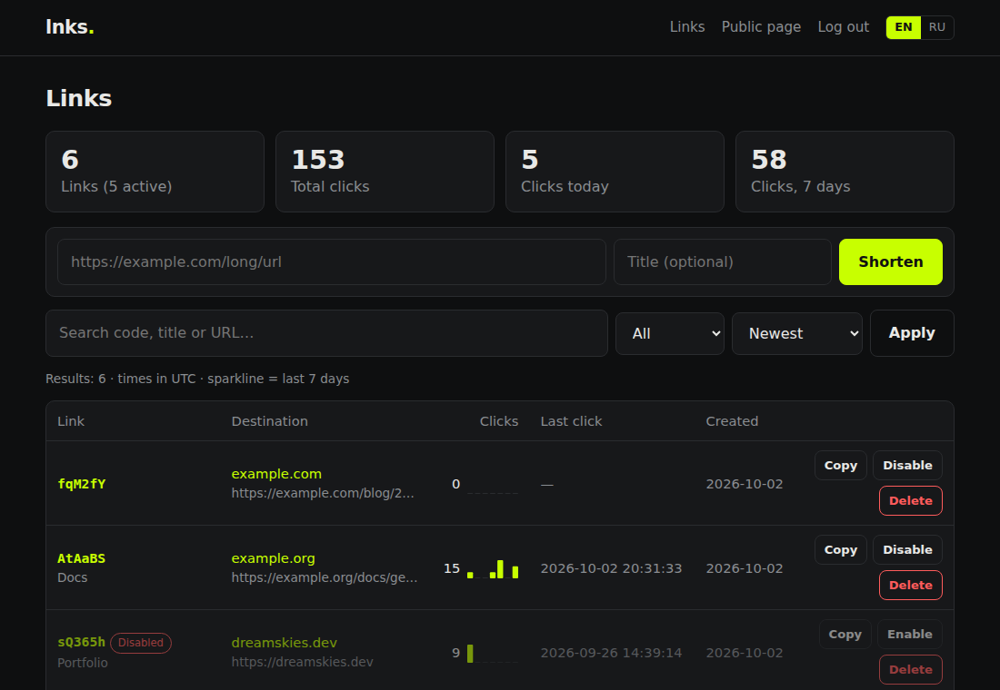
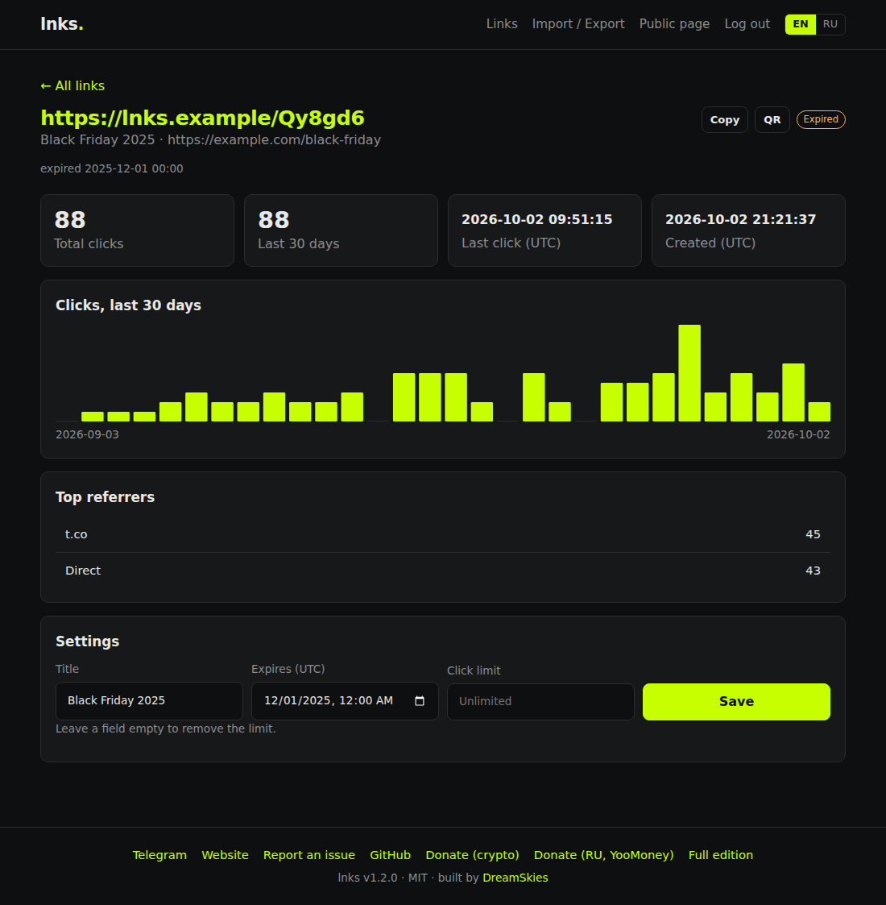
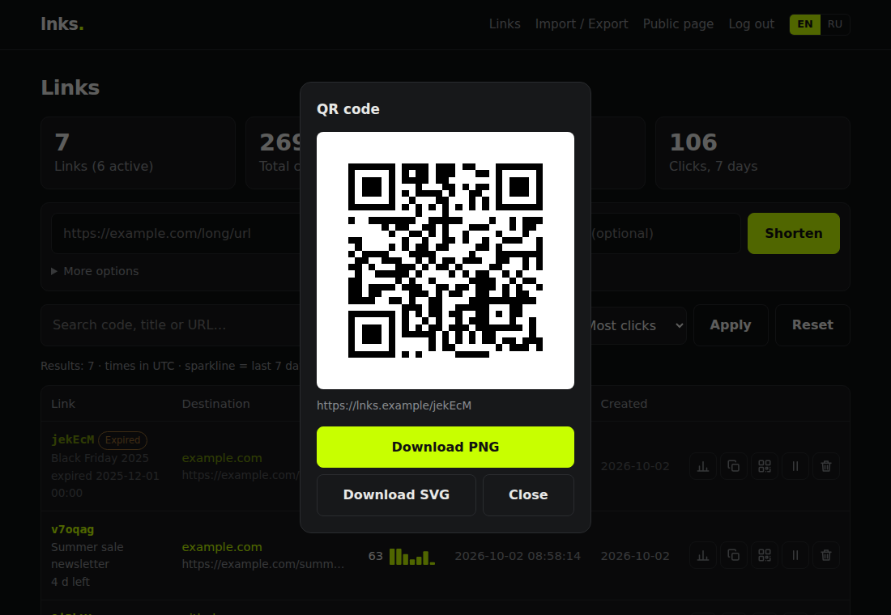
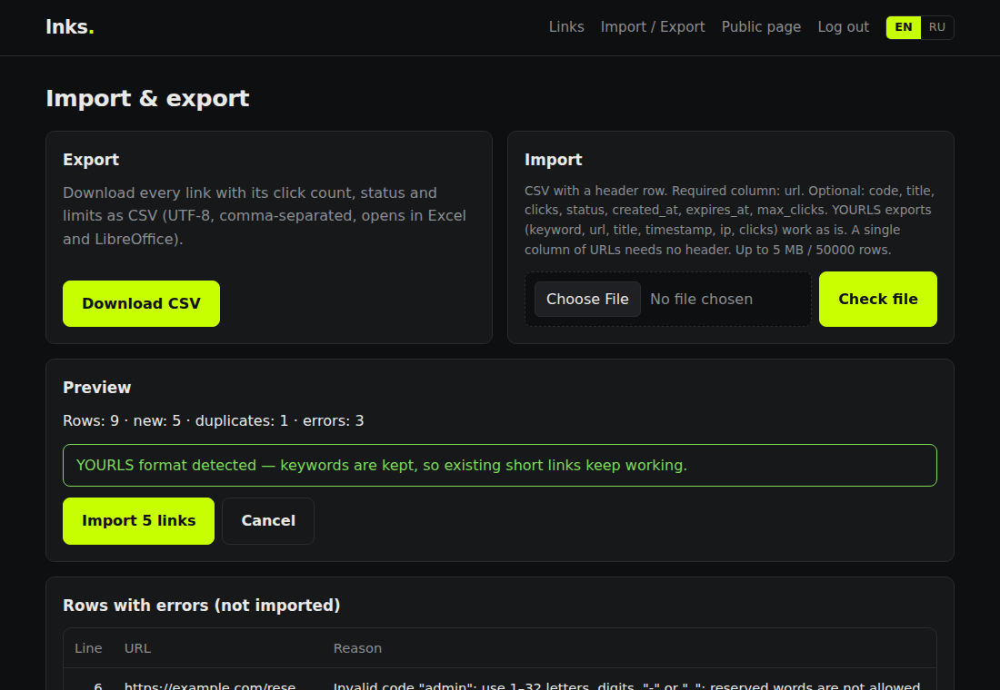

Свой сокращатель ссылок.
Без SSH и MySQL.
Залейте несколько PHP-файлов по FTP, откройте домен, задайте пароль — готово. lnks работает на самом дешёвом виртуальном хостинге, хранит всё в одном файле SQLite и ничего не отправляет трекерам.
Бесплатно, открытый код (MIT). PHP 8.0+ — вот и все требования.
Как это выглядит
Быстрая админка, удобная и с телефона, на русском и английском, светлая и тёмная.




Всё, что нужно сокращателю
И ничего, для чего нужен системный администратор.
Свои короткие имена
/spring-sale вместо /x7Fq2a, на одном или нескольких доменах.
QR-коды
Создаются в браузере, скачиваются в PNG или SVG.
Статистика
Клики по дням и часам, устройства, браузеры, ОС, источники; страны по желанию. IP не хранятся.
Срок и лимит кликов
Ссылка выключается в нужную дату или после N переходов и отвечает 410.
Ссылки под паролем
Перед переходом посетитель вводит пароль.
UTM-шаблоны
utm_source / medium / campaign в один клик.
Теги и массовые действия
Группируйте ссылки, фильтруйте, включайте / выключайте / удаляйте пачкой.
REST API и CSV
Всё из админки есть в API; импорт из YOURLS сохраняет старые ссылки.
Установка за минуту
Работает в cPanel, ISPmanager, Plesk, DirectAdmin и на любом хостинге с PHP 8.0+.
Скачайте
Возьмите ZIP последнего релиза и распакуйте.
Залейте по FTP
Скопируйте файлы в папку домена или поддомена (вместе со скрытым .htaccess).
Откройте сайт
Установщик проверит PHP и права и попросит логин и пароль администратора.
Сокращайте
Вставьте ссылку — получите короткую. Админка — /admin.php.
Подробная инструкция, конфиг Nginx и решение проблем: README → Установка по FTP
Сравнение
Сверено с репозиториями проектов в октябре 2026.
| lnks | YOURLS | Shlink | Kutt | |
|---|---|---|---|---|
| Среда | PHP 8.0+ | PHP 8.1+ | PHP 8.4+ | Node.js 20+ |
| База данных | SQLite, создаётся сама | MySQL / MariaDB | MySQL, MariaDB, PostgreSQL, SQL Server или SQLite | SQLite, PostgreSQL или MySQL |
| Установка только по FTP | ✓ | ✓ | ✗ CLI-установщик | ✗ процесс Node.js |
| Встроенная админка | ✓ | ✓ | отдельный веб-клиент | ✓ |
| QR-коды | ✓ | плагин | веб-клиент | ✓ |
| Срок / лимит кликов | ✓ / ✓ | плагины | ✓ / ✓ | ✓ / — |
| Импорт CSV | ✓ в т. ч. YOURLS | плагин | ✓ CLI | — |
Нашли неточность? Создайте issue
Поддержать проект
lnks бесплатен. Если он сэкономил вам время, можно поддержать разработку.